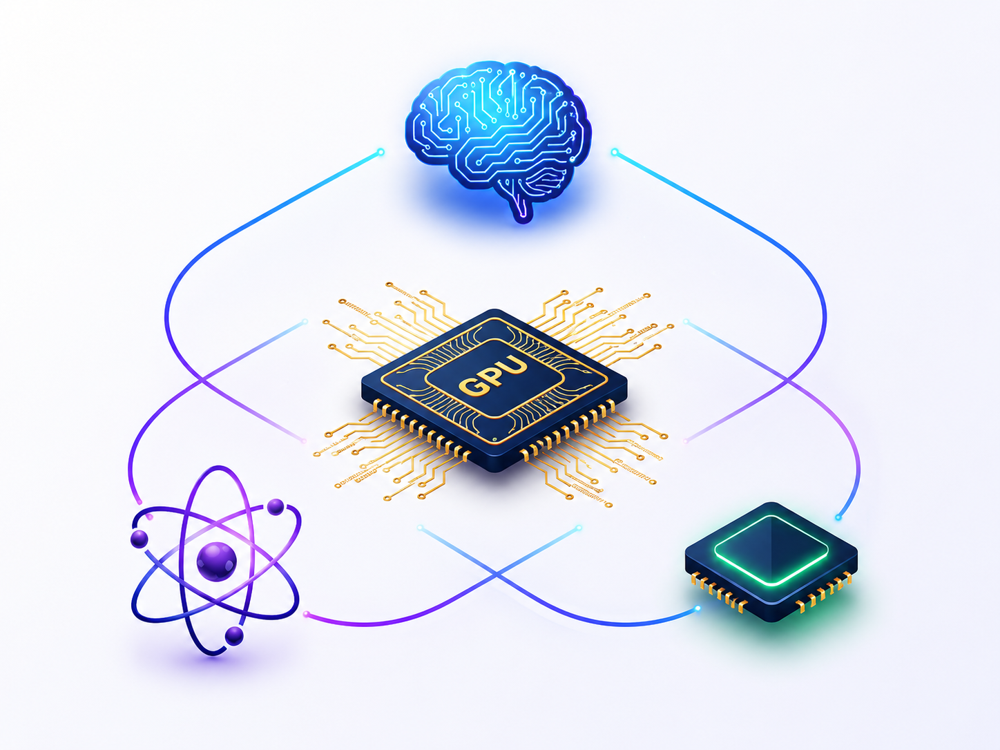

Scalable GPU & AI Hardware Systems
Multi-GPU memory systems, GNN acceleration, hybrid DNN parallelism, LLM serving, KV-cache reuse, and scheduling.
Edge AI Systems
Adaptive continual learning, self-supervised training, sparse computation, and real-time inference under tight resource budgets.

AI for Computer Vision
Dynamic patchification, token pruning, visual representation learning, 3D Gaussian splatting, and efficient video generation.
Quantum Computing Systems
Fault-tolerant compilation, photonic graph-state generation, qLDPC decoding, and quantum-classical acceleration.
Scalable GPU and AI Hardware Systems
ActiveBuilding the architecture, memory, and runtime systems for foundation-scale AI. Our work targets the systems barriers that limit multi-GPU platforms and AI workloads: distributed address translation, page placement, inter-GPU data movement, GNN irregularity, hybrid DNN parallelism, attention execution, KV-cache growth, and multi-tenant interference. Looking forward, we are developing RAG-aware serving runtimes, predictive KV reuse, prefill-decode disaggregation support, and accelerator mechanisms for speculative decoding and near-memory KV-cache lookup.
Selected Publications
- arXiv — Chunk-Level KV Cache Reuse for Efficient RAG Serving
- HPCA 2025 — OASIS: Object-Aware Page Management for Multi-GPU Systems
- MLSys 2025 — FastTree: Optimizing Attention Kernel and Runtime for Tree-Structured LLM Inference
- ASPLOS 2025 — Cascade: A Dependency-Aware Efficient Training Framework for Temporal GNNs
- ICML 2025 — MemFreezing: Adversarial Attack on Temporal GNNs under Limited Future Knowledge
- HPCA 2024 — GRIT: Enhancing Multi-GPU Performance with Fine-Grained Dynamic Page Placement
- MICRO 2024 — STAR: Sub-Entry Sharing-Aware TLB for Multi-Instance GPU
- HPCA 2023 — CEGMA: Coordinated Elastic Graph Matching Acceleration for Graph Matching Networks
Edge AI Systems
ActiveEnabling AI models to adapt continuously on mobile GPUs and IoT-class devices without exceeding strict memory, latency, energy, and thermal budgets. Our work restructures learning algorithms and system execution to reduce redundant computation, freeze or prune low-value work, and preserve responsiveness as edge environments evolve.
Selected Publications
- arXiv — EdgeOL: Efficient In-situ Online Learning on Edge Devices
- ICLR 2025 — Mutual Effort for Efficiency: Similarity-Based Token Pruning for Vision Transformers
- ICLR 2024 — Waxing-and-Waning: Efficient Self-Supervised Learning
- ICLR 2023 Spotlight — SmartFRZ: Attention-Based Layer Freezing for Efficient Training
- DAC 2024 — LOTUS: Learning-Based Online Thermal and Latency Variation Management for Edge Devices
AI for Computer Vision
ActiveDeveloping systems techniques for high-quality visual intelligence and generation. A central direction is adaptive video generation, where patchification and pruning co-evolve with the denoising process so computation follows the regions, frames, and temporal dynamics that matter most. We also study hardware-aware acceleration for 3D Gaussian splatting, efficient visual representation learning, and low-precision vision training.
Selected Publications
- CVPR 2026 — Content-Aware Dynamic Patchification for Efficient Video Diffusion
- arXiv — Accelerating 3D Gaussian Splatting with Tensor Cores
- ICLR 2025 — Mutual Effort for Efficiency: Similarity-Based Token Pruning for Vision Transformers
- ICLR 2024 — Waxing-and-Waning: Efficient Self-Supervised Learning
- ECCV 2022 — Generator-Free Low-Precision DNN Training with Stochastic Rounding
Quantum Computing Systems
ActiveBuilding compiler, architecture, and classical-acceleration support for scalable and fault-tolerant quantum computing. Our work targets noisy and heterogeneous hardware, including photonic systems and future multi-species platforms, by mapping quantum programs into reliable execution plans, reducing re-execution overheads, and accelerating simulation, decoding, and error-correction loops with GPUs.
Selected Publications
- ICCAD 2025 — STMC: Small-Tile Multiple-Copy Compilation for Reliable Measurement-Based Quantum Computing
- ISCA 2025 — Reinforcement Learning-Guided Graph State Generation in Photonic Quantum Computers
- ASPLOS 2024 — FMCC: Flexible Measurement-Based Quantum Computation over Cluster State
- ASPLOS 2024 — QRCC: Evaluating Large Quantum Circuits on Small Quantum Computers
- HPCA 2022 — Q-GPU: Optimizations for Quantum Circuit Simulation Using GPUs